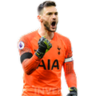

골키퍼TOP7
top7
다비드 데헤아
국적:스페인
소속팀:멘체스터 유나이티드
생년월일:1990.11.07
키,몸무게:192cm/76kg
top6
알리송 베케르
국적:브라질
소속팀:리버풀
생년월일:1992.10.02
키,몸무게:191cm/91kg
top5
에데르송 모라이스
국적:브라질
소속팀:멘체스터 시티
생년월일:1993.08.17
키,몸무게:188cm/84kg
top4
위고 요리스

국적:프랑스
소속팀:토트넘 핫스퍼
생년월일:1986.12.26
키,몸무게:188cm/87kg
top3
김영민?????
국적:대한민국
소속팀:hcs
생년월일:2005.05.08
키,몸무게:178cm/70
top2
에두아르 멘디
국적:세네갈
소속팀:첼시
생년월일:1992.03.01
키,몸무게:197cm / 86kg
top1
마누엘 노이어
국적:독일
소속팀:바이에른 뮌헨
생년월일:1986.03.27
키,몸무게:193cm / 92kg